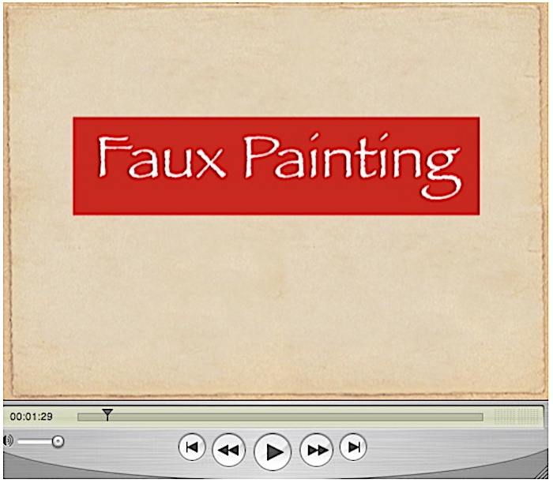
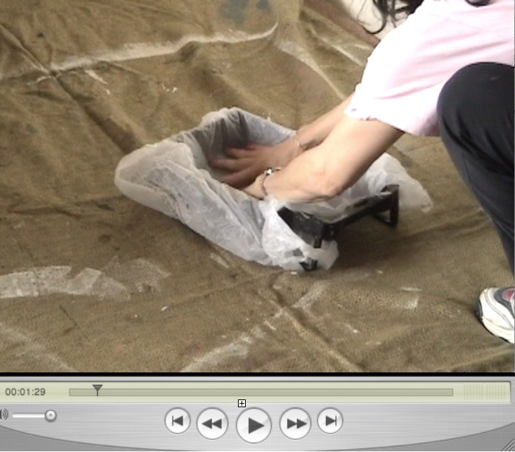
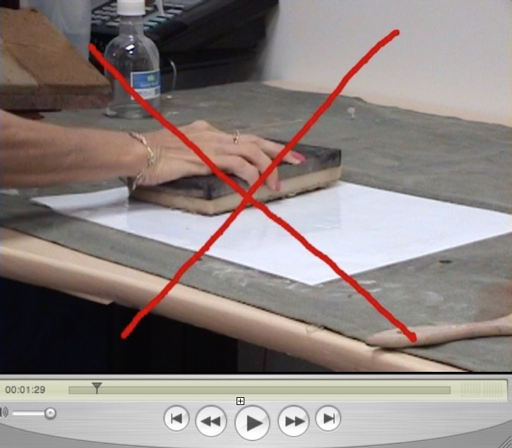
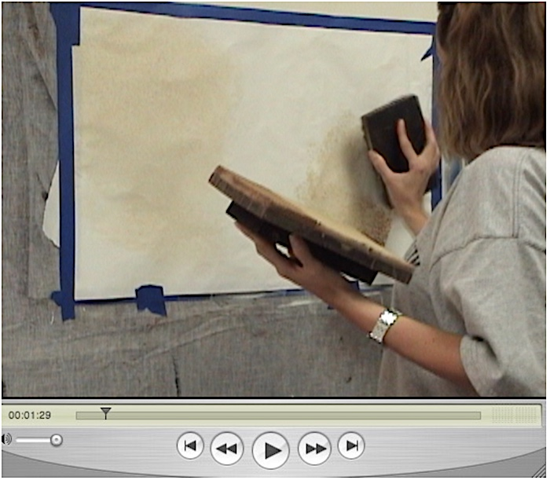
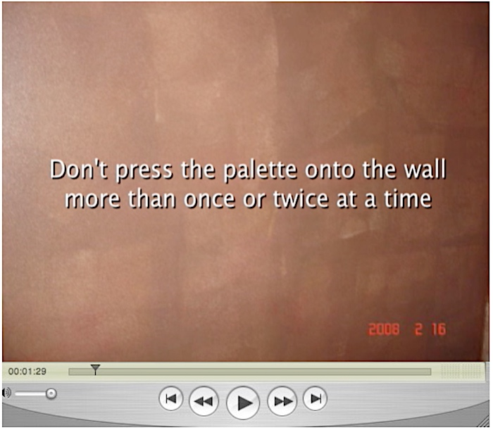
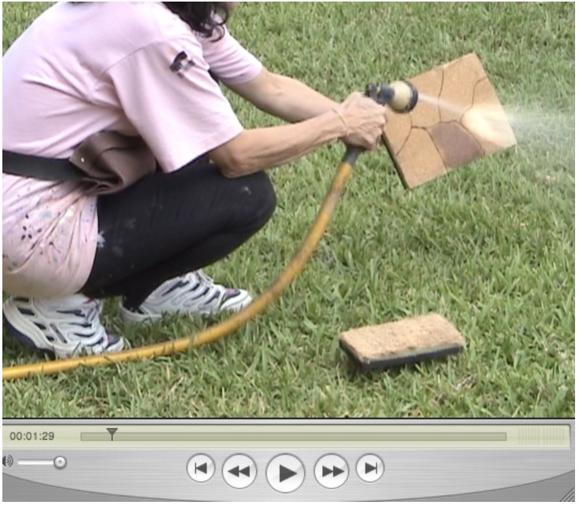

The videos below are just a few segments of our Faux Painting Workshop we have on DVD. Now you can watch them online. These sections are applicable for all faux finishes that we teach. We will be adding more videos, so please check back for more additons.
You can also view videos for particular finishes by going to the page on the main menu HOW TO.







Buy our Basic Faux Painting Kit and get started today, learning in the comfort of your own home.

Buy it today for only $39.99 and get a FREE Color Suggestions E-Book (for a limited time only).
The Multi Color Faux Palette is a time saving tool. You are able to load up to six colors at a time. The Poofy Pad used with the palette, will make your painting easier. Both tools are included in the Basic Faux Painting Kit.
Thank you so much for the pointers Sandra, and I will definitely check out the videos on your website. You are truly an encouragement and a blessing I know to many people.
I'll see you here, or there or in the air.
God bless,
Rita⭐⭐⭐⭐⭐
Learning how to paint walls with regular paint is easy. However, with so many faux finishing techniques, buying the right tools is important. With our patented ((#7472450) system, you can learn the most popular finishes like Color Washing, Old World, Ragging, Brick and Sponging using the same tools. In addition, adding multiple colors doesn't require additional steps. Our easy to follow DVDs show you how to properly use the tools to create beautiful works of art - on your walls. With other methods, you must wait till the first layer is dry before applying another color. When painting high walls, you have to use scaffolding or you have to carry trays up a ladder, which is dangerous. With our system, you just load the Multi Color Faux Palette and carry it up with the Poofy Pad.

(This kit includes Basic, Faux Marble, Faux Wood Kit and tools for texturing)
*FREE Priority Shipping and Color Idea E-book